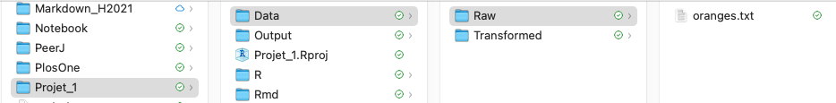

8 Project RStudio - niveau II
Dans le Chapitre @ref(projetRStudio), nous avons vu brièvement comment créer un projet R de manière à y regrouper l’ensemble des fichiers associés à un projet d’analyse de données. Malheureusement, l’approche présentée au Chapitre @ref(projetRStudio) n’est valide que lorsque le nombre de fichiers utilisés est petit et qu’il est possible de placer tous nos fichiers à l’intérieur du même répertoire. Par contre, lorsque le nombre de fichiers de données et/ou d’analyse devient trop grand, il est préférable d’utiliser une meilleure organisation de notre projet R. Cela permet, entre autres, de regrouper les différents types de fichiers ensembles. Dans le présent chapitre, nous avons examiner comment organiser adéquatement le répertoire (aussi nommé “dossier” ou “folder” en anglais) qui contient votre fichier .Rproj sur votre ordinateur. De cette façon, vos données, fichiers d’analyses et résultats seront toujours organisés de manière cohérente sur votre ordinateur dans le répertoire qui contient le projet R.
À titre de rappel, immédiatement après la création d’un nouveau projet R dans un nouveau répertoire, un seul fichier compose ce répertoire. Dans notre exemple du Chapitre @ref(projetRStudio), seul le fichier Projet_1.Rproj faisait partie de ce répertoire (voir Figure @ref(fig:figrp2)).
8.1 Sous-répertoires
Idéalement, le répertoire qui contient le projet R doit être divisé en sous-répertoires. La Figure @ref(fig:structure) montre l’organisation de base d’un répertoire qui contient un projet R. Je suggère la création de quatre sous-répertoires principaux : Data, Output, R et Rmd. L’appellation anglophone permet d’arrimer l’utilisation de RStudio avec d’autres outils, comme GitHub. Évidemment, vous pouvez les modifier et les nommer à votre goût en leur donnant un nom en français, comme Données, Résultats, R et Rmd. Personnellement, j’évite d’utiliser les accents dans la création des répertoires et les objets R. Cela peut compliquer bien des choses lorsque l’on partage nos fichiers avec des collègues qui n’utilisent pas l’encodage de type UFT-8.
8.2 Description des sous-répertoires
- Data
- Le sous-répertoire Data est divisée en deux sous-répertoires : Raw et Transformed. Le sous-répertoire Raw contient le fichier des données brutes, soit les données initialement récoltées par le chercheur ou l’analyste, comme un fichier Excel. Le sous-répertoire Transformed contient, quant à lui, les fichiers de données transformés par l’analyste à partir de ses scripts .R ou .Rmd. Par exemple, il arrive fréquemment que l’analyste ajoute des variables au fichier de données initiales. Donc, au lieu de travailler avec le donnée original, il en crée un nouveau qu’il sauvegarde dans le répertoire Transformed.
- Output
- Le sous-répertoire Output contient le document final produit par l’analyse. Par exemple, ce répertoire contient les fichiers .pdf et/ou les fichiers .docs qui sont associées aux analyses produites par l’analyste. Il comprend aussi les fichiers associés aux Figures qui seront utilisées dans les différentes publications associées au projet.
- R et Rmd
- Finalement, les sous-répertoires R et Rmd contiennent, respectivement, les fichiers .R et .Rmd (avec l’écriture R Markdown, comme les fichiers R Notebook). En résumé, ce sont les fichiers qui contiennent tous les codes R et R Markdown nécessaires pour transformer les données, réaliser les analyses et les figures, et publier les rapports finaux.
8.3 Avantages et désavantages
Plusieurs raisons militent pour cette sous-division :
- Nous pouvons regrouper les fichiers de même nature dans le même sous-répertoire (ex : fichiers de données).
- En utilisant une structure semblable d’un projet R à l’autre, l’analyste peut facilement importer et exporter des fichiers de données sans craindre de ne pas savoir où les retrouver.
- Lors du partage du projet R, il est facile pour un collaborateur de retrouver toutes les informations à partir du nom des sous-répertoires.
Par ailleurs, l’utilisation de sous-répertoires produit quelques inconvénients :
- Lors de l’importation et de l’exportation des fichiers de données, il faut ajouter l’extension du sous-répertoire associé au répertoire Data1.
- Parfois, dans notre empressement de créer une nouvelle analyse, nous oublions de déplacer le fichier dans le bon répertoire (R ou Rmd).
- L’ajout de multiples sous-répertoires peut complexifier la navigation à l’intérieur du projet R. Il est donc recommandé de limiter les sous-répertoires à deux niveaux (ex : Data / Raw).
8.5 Exemple
À titre d’exemple, j’ai créé les sous-répertoires dans le répertoire principal de mon projet R (Projet_1) et j’ai déplacé dans le sous-répertoire les fichiers .Rmd et .nb.html que nous avons créé à la section @ref(deuxfichiers). À l’aide du logiciel Finder de mon ordinateur (Mac), nous pouvons voir l’organisation des sous-répertoires (voir Figure @ref(fig:Files2)).

8.6 Répertoire du projet
Après avoir créer nos répertoires dans notre projet RStudio, pour chacun des fichiers .Rmd que nous créons, il faut indiquer à RStudio d’utiliser le répertoire principal de notre projet RStudio. Par défaut, R utilise le répertoire Document de votre ordinateur et non celui du projet. Il faut donc changer le répertoire Document par le répertoire du projet RStudio. La démarche consiste simplement à cliquer sur l’onglet Knit, au haut de la fenêtre Source de RStudio, de sélectionner Directory et ensuite Project Directory (voir Figure @ref(fig:project-directory)).
8.7 Chemins d’accès relatifs
En indiquant à RStudio d’utiliser le répertoire du projet RStudio comme répertoire principal, il est possible d’utiliser des chemins d’accès relatifs dans nos codes R pour préciser les répertoires où il faut importer et/ou exporter nos fichiers sur notre ordinateur. Un chemin d’accès relatif est un chemin (path, en anglais) qui précise le répertoire où se trouve nos fichiers sur notre ordinateur relativement au répertoire principal du projet RStudio.

Dans l’exemple de la Figure @ref(fig:Files2), le répertoire principal du projet RStudio est Projet_1. Donc, tous les chemins relatifs précisés dans nos codes R doivent prendre le répertoire Projet_1 comme point de départ. Ainsi, le chemin relatif pour le fichier oranges.txt qui se trouve dans le répertoire Raw (voir Figure @ref(fig:chemin-relatif2) aurait la forme suivante :
\[ ./Data/Raw/oranges.txt \]
Notez la présence du . qui désigne le répertoire principal du projet RStudio.
8.7.1 Importation de fichiers
La Figure @ref(fig:import-data) montre le chemin d’accès relatif (./Data/Raw/) pour importer le fichier de données oranges.txt à partir d’un bloc de codes R.
8.7.2 Exportation de fichiers
La Figure @ref(fig:export-data) montre le chemin d’accès relatif (./Data/Transformed/) pour exporter (et sauvegarder) le fichier de données oranges-transformed.txt à partir d’un bloc de codes R. Dans le premier bloc de codes, les mesures métriques de l’âge et de la circonférences des arbres ont été transformées en mesures anglaises. Dans le second bloc de codes, le fichier oranges-transformed a été sauvegardé en format .txt.
La Figure @ref(fig:chemin-relatif-transformed) nous confirme que le fichier oranges-transformed.txt a bel et bien été exporté dans le répertoire /Data/Transformed/ du Projet_1.
8.8 Recommandation
Lorsque nous travaillons sur un projet d’analyse de données, il est facile de devenir mélangé dans les différentes versions de nos analyses et avec les différents fichiers qui contiennent les données transformées. La meilleure façon d’éviter la confusion consiste à bien organiser votre espace de travail pour chacun des projets R que vous allez entreprendre. Et la meilleure façon consiste à créer la même structure que celle présentée ci-haut pour chacun de vos projets R.
Néanmoins, prenez note que cette proposition de structure de projet R est minimale. Si vous le désirez, vous pouvez créer autant de sous-répertoires que vous le désirez. Par exemple, le sous-répertoire Rmd pourrait comprendre les sous-répertoires Analyse-1, Analyse-2, Analyse-3, etc. Bref, avec la pratique, vous serez en mesure de préciser la structure d’un projet R qui vous convient le mieux. Malgré tout, gardez en tête de limiter le nombre de sous-répertoires. Parfois, trop, c’est comme pas assez !
8.9 Exercice 7
L’objectif de l’Exercice 7 consiste à organiser votre projet R. En résumé, vous devez créer les sous-répertoires présentés ci-haut et déplacer les fichiers correspondants dans les bons sous-répertoires. À partir du fichier Exercice R Notebook que vous avez complété lors de l’Exercice 6, veuillez :
- Créer les sous-répertoires Data, Output, R et Rmd.
- Dans le répertoire Data, créer les sous-répertoires Raw et Transformed.
- Déplacer les fichiers Exercice Notebook.Rmd et Exercice Notebook.nb.html dans le sous-répertoire Rmd.
8.10 Solution
La structure de votre projet R (dans l’onglet Projet_1) devrait ressembler à celui de la Figure @ref(fig:Files3).
De plus, votre répertoire Data devraient comprendre les sous-répertoires illustrés à la Figure @ref(fig:Files4) et votre répertoire Rmd devraient comprendre les fichiers présentés à la Figure @ref(fig:Files5).
Par exemple, l’importation et l’exportation des fichiers de données nécessitent l’obligation d’ajouter le chemin d’accès relatif au répertoire du projet RStudio.↩︎
Avec un Mac, vous pouvez créer les sous-répertoires à partir du logiciel Finder. Avec un PC, vous pouvez créer les sous-répertoires à partir du logiciel Explorateur de fichiers.↩︎
8.4 Comment créer les sous-répertoires
Bien que vous pouvez créer les sous-répertoires à partir de logiciels déjà disponibles par défaut avec votre ordinateur2, je recommande d’utiliser le logiciel RStudio pour cela. Dans le fenêtre des utilitaires (Files, Plots, Packages, Help, Viewer), l’onglet Files contient, entre autres, tous les outils nécessaires pour créer, effacer et renommer les sous-répertoires. Cette approche réplique d’ailleurs celle qui doit être utilisée avec RStudio Cloud.
Avant de débuter à créer de nouveaux sous-répertoires, il faut s’assurer que la fenêtre Files présente les fichiers disponibles dans le répertoire principal de votre projet R. Si le nom du fichier de votre projet R est visible (fichier .Rproj), vous êtes à la bonne place (voir Figure @ref(fig:figrp2)) ! Sinon, naviguez à l’intérieur des répertoires situés à la droite de Home pour retrouver votre fichier .Rproj. Par la suite, l’onglet New Folder vous permet de créer les sous-répertoires. Pour effacer ou renommer un sous-répertoire, il faut cocher la case située à sa gauche et cliquer sur l’onglet Delete ou Rename. De plus, l’onglet More comprend d’autres options intéressantes comme le déplacement des fichiers d’un répertoire à l’autre ou la possibilité de copier les fichiers dans de nouveaux répertoires.